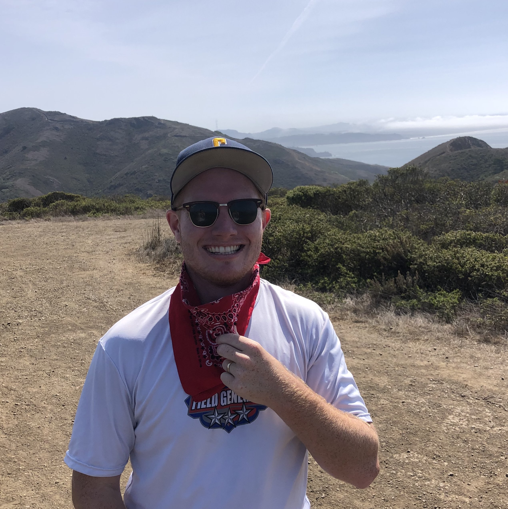

|
Matthew G. Jones
|
 |
About Me
I am a Bioinformatics PhD candidate at UC San Francisco and UC Berkeley, advised by Jonathan Weissman and Nir Yosef. Generally, I'm interested in studying cancer & the immune system from the perpsective of high-throughput assays (mostly transcriptomics).
My current research is focused on developing suitable technologies and computational tools for studying how aggressive cancers evolve from a single transformed cell and eventually metastasize throughout a body. In this, I am the lead contributor to Cassiopeia, a software suite for reconstructing single-cell phylogenies from continuous CRISPR/Cas9 barcoding data.
In 2020, I spent the summer as a research intern at Google Brain Genomics working on deep learning methods for Electronic Health Record (EHR) data.
Before my PhD, I studied Computer Science at UC Berkeley and worked in the Nielsen Lab on developing simulators for large admixture events. And before that, I grew up in a small town outside of Pasadena, CA where I was a tri-sport athelete and musician.
|
Research Interests
Selected Publications
Single-cell lineages reveal the rates, routes, and drivers of metastasis in cancer xenografts. Jeffrey J. Quinn*, Matthew G Jones*, Ross A Okimoto, Shigeki Nanjo, Michelle M Chan, Nir Yosef, Trever G Bivona, Jonathan S Weissman. Science. 2021.
Inference of Single Cell Phylogenies from Lineage Tracing Data with Cassiopeia. Matthew G Jones*, Jeffrey J Quinn*, Alex Khodaverdian*, Michelle M Chan, Jeffrey A Hussmann, Robert Wang, Chenling Xu, Jonathan S Weissman, Nir Yosef. Genome Biology. 2020.
Functional interpretation of single cell similarity maps. David DeTomaso*, Matthew G Jones*, Meena Subramaniam, Tal Ashuach, Chun J. Ye, Nir Yosef. Nat. Comm. 2019.
Find my full publication list here.
Beyond Science
In my downtime, you can find me engrossed in a book, playing guitar, or listening to my records. I often am looking for an excuse to get outside, or to travel
|